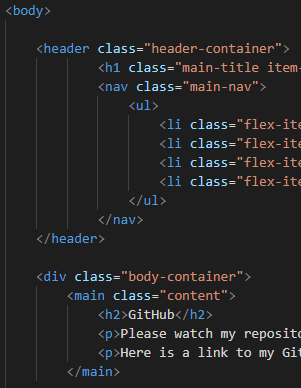

HTML
Chocolate bar carrot cake sugar plum toffee oat cake croissant. Jelly-o halvah bonbon sweet candy cookie soufflé. Pudding lemon drops marzipan croissant cupcake. Soufflé tiramisu icing cake soufflé. Apple pie tart gummies oat cake marshmallow marshmallow cupcake pie. Marzipan powder muffin.
December 1, 2020: Div Soup Fix
Today, I worked on making sure my HTML didn't fall into the 'div soup' problem. Div Soup is when programmers use the div element so much in their code, it makes it difficult for folks using screen readers to navigate their web page. Divs can be very helpful in wrapping content while designing web pages. But when used too much, it can make it difficult for those using screen readers to understand the content and flow of a web page and potentially stop using it altogether. Using HTML elements that describe a section of content more precisely makes the verbal description more clear to those who can't see the content. It's important for programmers to keep this in mind while designing web pages becuase it helps make the web accessible and usable to everyone, no matter how they are accessing it.
I don't have too much code yet, so it wasn't difficult to make this fix today. I noticed two locations where I had divs that could be changed to more specific HTML elements. The first instance I fixed was the div I had surrounding my header. This div was where I was applying my header style. Using a div here is unnecessary becuase I could apply that style directly to my header element.
The second was a div I was using as the structure to my main page content. As you may have guessed, this div can be replaced by the main HTML element to make it more clear.
An added benefit to fixing div soup in your code is that it makes your code a bit easier to interpret for anyone reading or collaborating on your web page. Once you make changes to your code like this, you always want to make sure your CSS styles aren't affected. Luckily, I style my pages with classes most of the time so I didn't have to change my CSS code.
